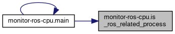
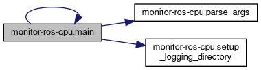
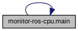
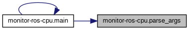
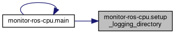

- Generated on Fri Mar 14 2025 14:19:04 for Carma-platform by
 1.9.4
1.9.4
|
Carma-platform v4.2.0
CARMA Platform is built on robot operating system (ROS) and utilizes open source software (OSS) that enables Cooperative Driving Automation (CDA) features to allow Automated Driving Systems to interact and cooperate with infrastructure and other vehicles through communication.
|
Functions | |
| def | parse_args () |
| def | setup_logging_directory (output_dir) |
| def | is_ros_related_process (proc_info, cmdline) |
| def | get_process_environment (pid) |
| def | main () |
Variables | |
| dictionary | ROS_KEYWORDS |
| dictionary | EXCLUDE_KEYWORDS = {"code", "chrome", "firefox", "vscode", "gnome"} |
| def monitor-ros-cpu.get_process_environment | ( | pid | ) |
Try to get ROS-related environment variables for a process
Definition at line 106 of file monitor-ros-cpu.py.
| def monitor-ros-cpu.is_ros_related_process | ( | proc_info, | |
| cmdline | |||
| ) |
Check if a process is ROS-related based on name and command line
Definition at line 88 of file monitor-ros-cpu.py.
Referenced by main().

| def monitor-ros-cpu.main | ( | ) |
Definition at line 119 of file monitor-ros-cpu.py.
References is_ros_related_process(), main(), parse_args(), and setup_logging_directory().
Referenced by main().


| def monitor-ros-cpu.parse_args | ( | ) |
Definition at line 64 of file monitor-ros-cpu.py.
Referenced by main().

| def monitor-ros-cpu.setup_logging_directory | ( | output_dir | ) |
Definition at line 80 of file monitor-ros-cpu.py.
Referenced by main().

| dictionary monitor-ros-cpu.EXCLUDE_KEYWORDS = {"code", "chrome", "firefox", "vscode", "gnome"} |
Definition at line 61 of file monitor-ros-cpu.py.
| dictionary monitor-ros-cpu.ROS_KEYWORDS |
Definition at line 34 of file monitor-ros-cpu.py.